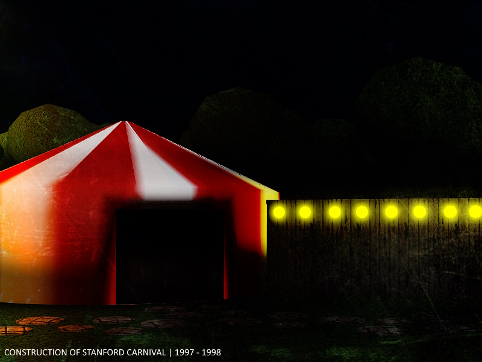
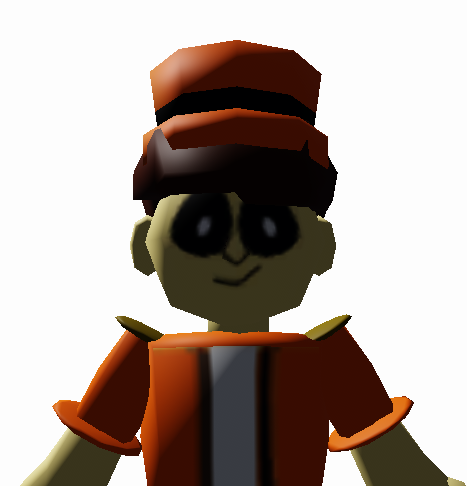
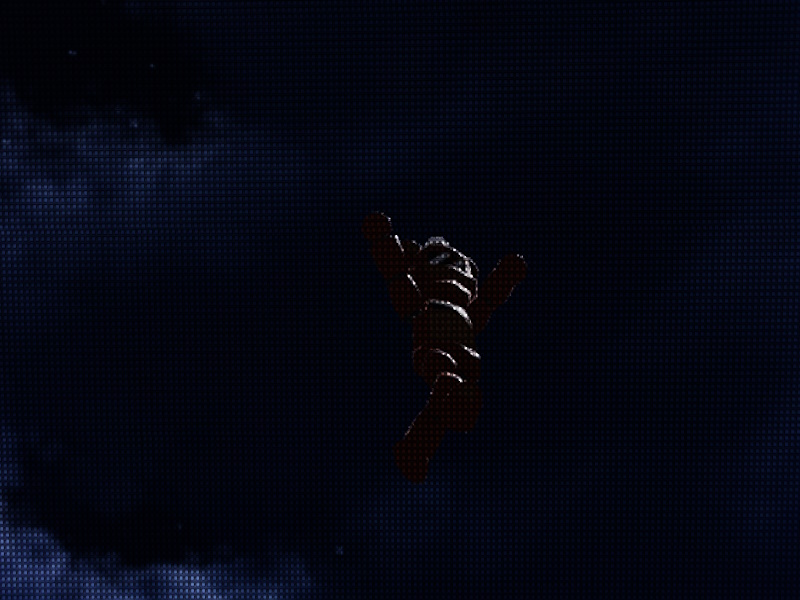

<! –– The audacity that the bear escaped. I BUILT HIM. I MADE WHO HE IS! DFHJKLSVDFHJLS7UGJVN FTDBKH... ––>
<html>
<body style="background-color:maroon;">
<center>
<p style="color:white;"><font size="+6"><b><h?> Stanford City Carnival </h?></b>
<hr class="dotted">

<hr class="dotted">
<font size="+2.4"><p style="color:white;"><b> What is The Stanford City Carnival? </p></b>
<font size="+1"><p style="color:white;">The Stanford City Carnival is a Government project that has started back in 1991. It was created to cheer up citizens of the city after Typhoon Colossus' aftermath.</p>
<font size="+1"><p style="color:white;">The carnival's construction began in 1997, which was funded by Brandon Stanford. The Carnival was popular for it's technological advancements. Instead of using animals they use robots.</p>
<font size="+1"><p style="color:white;">The carnival still stands to this day, however there are more traffic nowadays. Tickets only cost a single dollar. So what are you waiting for? Go now!!</p>
<hr class="dotted">
<font size="+2.4"><p style="color:white;"><b> Daily BLOG: </p></b>
<font size="+1"><p style="color:white;"><24/08/2004:> Tents almost flew due to the very windy weather today. We had to hold the tents together so it won't fly away!!</p>
<font size="+1"><p style="color:white;"><24/09/2004:> We are applying new trampolines for a new ride! Boing boing boing!!</p>
<font size="+1"><p style="color:white;"><24/10/2004:> A celebrity visited our Carnival!! Don't know who they are but it surely got us tons of traffic!</p>
<font size="+1"><p style="color:white;"><24/10/2004:> We got more sponsors! More opportunities! </p>
<font size="+1"><p style="color:white;"><24/10/2004:> One of our Robots tripped today. They we're okay but they have dents on their head piece. </p>
<hr class="dotted">
<font size="+2.4"><p style="color:white;"><b> Employee of the Month: </p></b>

<font size="+1"><p style="color:white;"> "Cash MoneyMoney" </p>
<font size="+0.5"><p style="color:white;"> Busy Bee! </p>
<hr class="dotted">
<font size="+2.4"><p style="color:white;"><b> LOST: </p></b>

<font size="+1"><p style="color:white;"> Robot Bear with tophat, sunglasses and bowtie is missing. </p>
<font size="+1"><p style="color:white;"> Reward: $100 </p>
<hr class="dotted">
<font size="+1"><p style="color:white;"> <1> <2> <3> </p>
<hr class="dotted">
</center>
</body>
</html>